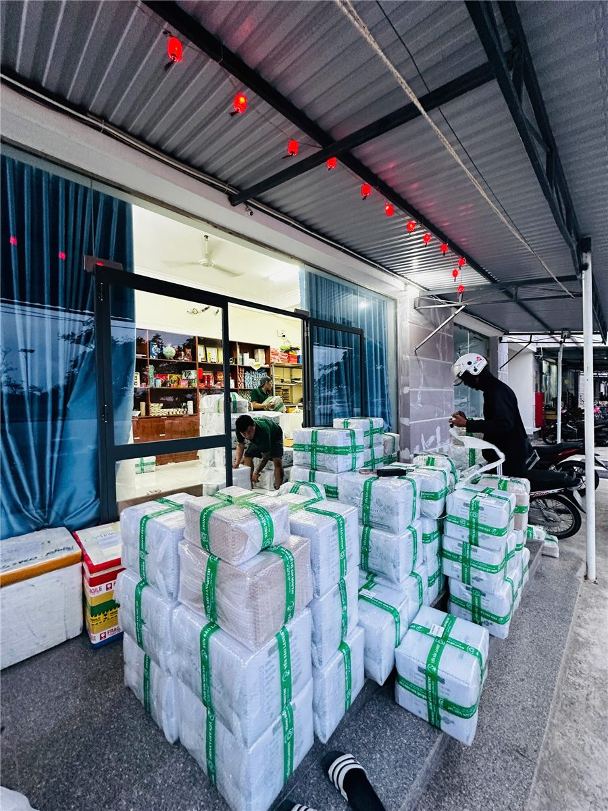
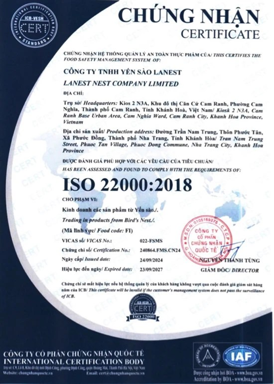

Công Ty Sỉ Yến Sào Uy Tín Tại Khánh Hòa: Kiểm Tra Thế Nào Trước Khi Nhập Hàng?
Yến Sào Lanest · Đăng ngày 01/11/2026

Khánh Hòa là nơi nhiều người nghĩ tới đầu tiên khi tìm nguồn yến. Vì vậy, tìm một công ty sỉ yến sào uy tín tại Khánh Hòa không khó vì thiếu nơi bán, mà khó vì có quá nhiều nơi bán, trong khi không phải nơi nào cũng có đủ giấy tờ, kiểm nghiệm và hóa đơn. Bài này đi qua các bước một người làm nghề yến ở Cam Ranh dùng để phân biệt một công ty làm thật với một điểm bán "cho có".
Hàng của Yến Sào Lanest đóng thùng, xếp chờ giao cho đại lý
1. Tra pháp lý: có phải công ty thật không?
Việc đầu tiên rất đơn giản: xin mã số doanh nghiệp, rồi tự tra trên Cổng thông tin quốc gia về đăng ký doanh nghiệp. Anh chị nên xem ba điểm:
- Tên pháp lý và mã số thuế có khớp với tên in trên hóa đơn, trên nhãn sản phẩm không.
- Ngành nghề đăng ký có ngành bán buôn hoặc sản xuất sản phẩm từ yến không.
- Địa chỉ trụ sở có phải một nơi có thật, có bảng hiệu, liên lạc được không.
Lấy chính Lanest làm ví dụ: Công ty TNHH Yến Sào Lanest, mã số doanh nghiệp 4201991164, đăng ký lần đầu ngày 07/12/2023 (trước đó là hộ kinh doanh cùng tên, bán yến từ năm 2017), trụ sở tại Kios 2 N3A, Khu đô thị Căn Cứ Cam Ranh, Khánh Hòa. Ngành chính đăng ký là bán buôn thực phẩm, cụ thể là thành phẩm từ tổ yến.
2. Hồ sơ sản phẩm: công bố, kiểm nghiệm, mã vạch
Một công ty bán sỉ nghiêm túc phải đưa ra được hồ sơ của từng sản phẩm, không chỉ hồ sơ của công ty. Anh chị nên xin xem:
- Bản tự công bố sản phẩm kèm giấy tiếp nhận của cơ quan quản lý. Ví dụ, sản phẩm Yến Sào Tinh Chế Lanest có giấy tiếp nhận số 46/2024/TCB do Chi cục Quản lý Chất lượng Nông Lâm sản và Thủy sản tỉnh Khánh Hòa cấp.
- Phiếu kiểm nghiệm của bên thứ ba. Mẫu Yến Sào Tinh Chế Lanest kiểm tại AVATEK cho kết quả đạm 62,7%, không phát hiện Salmonella, không phát hiện kim loại nặng.
- Chứng nhận hệ thống: Lanest có ISO 22000:2018 về quản lý an toàn thực phẩm, hiệu lực đến 23/09/2027.
Người sáng lập Lanest từng nói thẳng lý do nhiều nhãn yến ở Khánh Hòa phải dừng:
"hồi trước có rất nhiều nhãn hàng ở đây nhưng người ta làm sản phẩm yến cho không đạt nên người ta ngưng hoặc người ta không xuất hóa đơn đầy đủ, sợ kiểm tra ngược lại nên ngưng, hoặc cắt máu quá sát không đủ khả năng duy trì."

Chứng nhận ISO 22000:2018 của Công ty TNHH Yến Sào Lanest
3. Kiểm nghiệm một lần hay kiểm nghiệm đều?
Một tờ kiểm nghiệm chỉ nói về mẫu gửi đi hôm đó. Câu nên hỏi tiếp là: bao lâu công ty gửi mẫu một lần? Với Lanest, người sáng lập cho biết:
"Nhiều bên đóng cửa nhưng bên chị vẫn duy trì được vì hàng tháng đều tự gửi mẫu đi kiểm nghiệm thật."
4. Nguồn nguyên liệu và cách làm hàng
Ở Khánh Hòa, hỏi "yến lấy từ đâu" là câu bình thường, đừng ngại. Tổ yến thô của Lanest thu hoạch từ các nhà yến ven biển miền Trung, chủ yếu Khánh Hòa, Bình Định, Phú Yên, Ninh Thuận và Bình Thuận, sơ chế thủ công, không tẩy trắng, không ngâm hóa chất.
Câu hỏi thứ hai là ai kiểm hàng. Lanest có đội thợ riêng từ năm 2023, mỗi mẻ yến tinh chế đi qua 4 chốt kiểm: thợ nhặt, thợ đảo lại, thợ đắp, nhân viên kiểm tra cuối. Quyết định tự làm bắt đầu từ một lần người sáng lập đem 100g yến tinh chế nhập về ngâm ra sấy lại:
"khi mà mình ngâm ra mình sấy lại thì nó chỉ còn có 84 g thôi. Tức là người ta làm ăn gian dối với mình á"
Chi tiết từng chốt có trong bài bên trong xưởng yến Lanest.
5. Hóa đơn: bằng chứng nguồn gốc cho chính người nhập
Với người nhập sỉ, hóa đơn không chỉ để kê khai. Đó là thứ chứng minh hàng mình bán có nguồn gốc rõ ràng khi có người hỏi. Từ khi lên công ty cuối năm 2023, Lanest xuất hóa đơn đầy đủ; giá đã gồm VAT 8%, cần hóa đơn VAT công ty thì gửi thông tin ngay khi đặt hàng.
"rất là nhiều doanh nghiệp vẫn còn đang không có xuất phát hóa đơn á thì bên mình tâm niệm là bên mình sẽ làm đúng nhất có thể."
6. Cách công ty đối xử với người bán lại
Một công ty sỉ uy tín phải bảo vệ được người nhập hàng của mình. Hai điều nên hỏi: có chính sách giữ giá, chống phá giá thành văn không; và công ty có tự bán thẳng cho khách của đại lý không. Ở Lanest, chính sách bán hàng công khai yêu cầu cộng tác viên, đại lý, nhà phân phối bán đúng giá niêm yết, cấm phá giá, cấm lôi kéo khách của nhau. Về dữ liệu khách của đại lý, người sáng lập giữ nguyên tắc:
"mình làm việc rất là uy tín mình không bao giờ đụng tới data khách hàng của đại lý ở bên dưới"
Bảng kiểm nhanh khi chọn công ty sỉ yến sào ở Khánh Hòa
- Tra được mã số doanh nghiệp, tên và địa chỉ khớp với hóa đơn, nhãn hàng.
- Có bản tự công bố và giấy tiếp nhận cho từng sản phẩm định nhập.
- Có phiếu kiểm nghiệm bên thứ ba, và kiểm nghiệm định kỳ.
- Nói rõ được nguồn nguyên liệu và ai kiểm hàng trước khi đóng hộp.
- Xuất hóa đơn đầy đủ.
- Có chính sách giữ giá và cam kết không đụng tới khách của đại lý.
Muốn xem thêm góc nhìn của người nhập hàng, anh chị đọc bài nhập sỉ yến sào: kinh nghiệm chọn nguồn hàng. Nếu đã muốn tìm hiểu cách hợp tác, xem trang nhập yến làm đại lý.
Câu hỏi thường gặp
Làm sao biết một công ty yến sào ở Khánh Hòa có thật?
Xin mã số doanh nghiệp rồi tự tra trên Cổng thông tin quốc gia về đăng ký doanh nghiệp. Tên, mã số và địa chỉ phải khớp với hóa đơn và nhãn sản phẩm.
Tôi có thể xin xem hồ sơ sản phẩm của Lanest trước khi nhập không?
Được. Anh chị gọi 0258 6278 627 hoặc nhắn fanpage Yến Sào Lanest để được gửi chứng nhận, bản tự công bố và kết quả kiểm nghiệm.
Lanest có xuất hóa đơn cho đơn sỉ không?
Có. Giá đã gồm VAT 8%; cần hóa đơn VAT công ty, anh chị gửi thông tin khi đặt hàng.